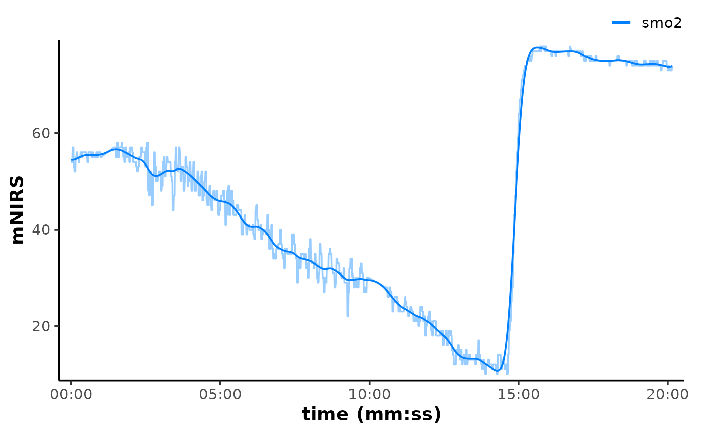

Apply digital filtering/smoothing to numeric vector data within a data frame using either:
A cubic smoothing spline.
A Butterworth digital filter.
A simple moving average.
Note the method-specific arguments below.
Usage
filter_mnirs(
data,
nirs_channels = NULL,
time_channel = NULL,
method = c("smooth_spline", "butterworth", "moving_average"),
na.rm = FALSE,
verbose = TRUE,
...,
spar = NULL,
order = 2L,
W = NULL,
fc = NULL,
sample_rate = NULL,
type = c("low", "high", "stop", "pass"),
edges = c("rev", "rep1", "none"),
width = NULL,
span = NULL,
partial = FALSE
)Arguments
- data
A data frame of class "mnirs" containing time series data and metadata, a list of data frames, or a grouped data frame (see Details).
- nirs_channels
A character vector giving the names of mNIRS columns to operate on. Must match column names in
dataexactly.If
NULL(default), thenirs_channelsmetadata attribute ofdatais used.
- time_channel
A character string naming the time or sample column. Must match a column name in
dataexactly.If
NULL(default), thetime_channelmetadata attribute ofdatais used.
- method
A character string indicating how to filter the data. Additional arguments must be specified for each method. See Details.
"smooth_spline"Fits a cubic smoothing spline. Additional arguments:
spar."butterworth"Uses a centred Butterworth digital filter. Additional arguments:
order,Worfc,sample_rate,type,edges. Seefilter_butterworth()."moving_average"Uses a centred moving average filter. Additional arguments:
widthorspan,partial. Seefilter_moving_average().
- na.rm
Logical; default is
FALSE, propagates anyNAs to the returned vector. IfTRUE, ignoresNAs and processes available valid samples within the local window. May return errors or warnings. (see Details).- verbose
Logical.
TRUE(default) will display, andFALSEwill silence warnings and information messages helpful for troubleshooting. Global default can be set viaoptions(mnirs.verbose = FALSE).- ...
Additional arguments passed to the underlying method function. See Details.
- spar
smooth_spline: A numeric smoothing parameter passed to
stats::smooth.spline(). IfNULL(default), automatically determined via penalised log likelihood.- order
butterworth: An integer defining the filter order (default
order = 2).- W
butterworth: A one- or two-element numeric vector within
[0, 1]defining the filter cutoff frequency(ies) as a fraction of the Nyquist frequency (see Details). One of eitherWorfcmust be specified.- fc
butterworth: A one- or two-element numeric vector defining the filter absolute cutoff frequency in Hz. Used with
sample_rateto computeW. One of eitherWorfcmust be specified.- sample_rate
butterworth: A numeric sample rate in Hz. Will be taken from metadata or estimated from
time_channelif not defined.- type
butterworth: A character string specifying filter type, one of:
c("low", "high", "stop", "pass")("low"is the default).- edges
butterworth: A character string specifying the edge padding, one of:
c("rev", "rep1", "none")("rev"is the default). Seefilter_butterworth().- width
moving_average: An integer number of samples within the local window. One of either
widthorspanmust be specified.- span
moving_average: A numeric time duration in units of
time_channelwithin the local window. One of eitherwidthorspanmust be specified.- partial
moving_average: Logical; default is
FALSE, only returns values where a full window of valid (non-NA) samples are available. IfTRUE, ignoresNAand processes available valid samples (see Details).
Value
A tibble of class "mnirs" with metadata
available with attributes(). For list or grouped data frame input,
returns a named list of "mnirs" tibbles, one per interval.
Details
method = "smooth_spline"
Aliases: method = c("smooth spline", "spline")
Applies a non-parametric cubic smoothing spline from
stats::smooth.spline(). Smoothing is defined by the parameter spar,
which can be left as NULL and automatically determined via penalised
log likelihood. This usually works well for responses occurring on the
order of minutes or longer. spar can be specified typically, but not
necessarily, in the range spar = [0, 1].
method = "butterworth"
Aliases: method = c("butter")
Applies a centred (two-pass symmetrical) Butterworth digital filter
from signal::butter() and signal::filtfilt().
Filter type defines how the desired signal frequencies are either
passed or rejected from the output signal. Low-pass and high-pass
filters allow only frequencies lower or higher than the cutoff
frequency, respectively to be passed through to the output signal.
Stop-band defines a critical range of frequencies which are rejected
from the output signal. Pass-band defines a critical range of
frequencies which are passed through as the output signal.
The filter order (number of passes) is defined by order, typically
in the range order = [1, 10]. Higher filter order tends to capture
more rapid changes in amplitude, but also causes more distortion
around those change points in the signal. General advice is to use
the lowest filter order which sufficiently captures the desired rapid
responses in the data.
The critical (cutoff) frequency can be defined by W, a numeric value
for low-pass and high-pass filters, or a two-element vector
c(low, high) defining the lower and upper bands for stop-band
and pass-band filters. W represents the desired fractional cutoff
frequency in the range W = [0, 1], where 1 is the Nyquist
frequency, i.e., half the sample_rate of the data in Hz.
Alternatively, the cutoff frequency can be defined by fc and
sample_rate together. fc represents the desired cutoff frequency
directly in Hz, and sample_rate is the sample rate of the recorded data
in Hz. Where W = fc / (sample_rate / 2).
Only one of either W or fc should be defined. If both are
defined, W will be preferred over fc.
method = "moving_average"
Aliases: method = c("moving average", "ma")
Applies a centred (symmetrical) moving average filter in a local
window, defined by either width as the number of samples around
idx between [idx - floor(width/2), idx + floor(width/2)]. Or by
span as the timespan in units of time_channel between
[t - span/2, t + span/2].
Missing values
Missing values (NA) in nirs_channels will cause an error for
method = "smooth_spline" or "butterworth", unless na.rm = TRUE.
Then NAs will be ignored and passed through to the returned data.
For method = "moving_average", na.rm controls whether NAs within
each local window are either propagated to the returned vector when
na.rm = FALSE (the default), or ignored before processing if
na.rm = TRUE.
Data input formats
mnirs processing functions accept data in multiple formats:
A single "mnirs" data frame is processed and returned directly.
A list of "mnirs" data frames: each interval is processed separately and returned as a named list.
A grouped "mnirs" data frame, e.g. with
dplyr::group_by(): the data frame is split by grouping levels and each group is processed as a separate interval, returned as a named list.
Per-channel arguments
Arguments apply globally to all nirs_channels by default. Relevant
arguments can instead be supplied uniquely per-channel as a named list(),
with names matching nirs_channels, e.g.
replace_mnirs(
data,
nirs_channels = c(hhb, smo2),
invalid_values = list(hhb = -1, smo2 = c(0, 100)),
invalid_above = list(hhb = 10),
span = list(3, hhb = 5)
)A non-list value applies to every channel (the default behaviour).
A
list()named bynirs_channelsapplies per-channel values.A single unnamed value in the list will be applied to unlisted channels (e.g.
span = list(3, hhb = 5)giveshhb5 and every other channel 3). If no unnamed fallback value in the list, channels not named in the list will be returned un-processed (e.g.span = list(hhb = 5)will only processhhb).list()names not matchingnirs_channelsare warned about and ignored.
Examples
## read example data and clean for outliers
data <- read_mnirs(
file_path = example_mnirs("moxy_ramp"),
nirs_channels = c(smo2 = "SmO2 Live"),
time_channel = c(time = "hh:mm:ss"),
verbose = FALSE
) |>
replace_mnirs(
invalid_values = c(0, 100),
outlier_cutoff = 3,
width = 7,
verbose = FALSE
)
data
#> # A tibble: 2,202 × 2
#> time smo2
#> <dbl> <dbl>
#> 1 0 54
#> 2 0.560 54
#> 3 1.11 54
#> 4 1.66 54
#> 5 2.21 54
#> 6 2.76 54
#> 7 3.31 57
#> 8 3.86 57
#> 9 4.41 57
#> 10 4.96 57
#> # ℹ 2,192 more rows
data_filtered <- filter_mnirs(
data, ## blank channels will be retrieved from metadata
method = "butterworth", ## Butterworth digital filter is a common choice
order = 2, ## filter order number
W = 0.02, ## filter fractional critical frequency `[0, 1]`
type = "low", ## specify a "low-pass" filter
na.rm = TRUE ## explicitly ignore NAs
)
## note the smoothed `smo2` values
data_filtered
#> # A tibble: 2,202 × 2
#> time smo2
#> <dbl> <dbl>
#> 1 0 54.5
#> 2 0.560 54.5
#> 3 1.11 54.5
#> 4 1.66 54.5
#> 5 2.21 54.5
#> 6 2.76 54.5
#> 7 3.31 54.5
#> 8 3.86 54.5
#> 9 4.41 54.5
#> 10 4.96 54.5
#> # ℹ 2,192 more rows
# \donttest{
if (requireNamespace("ggplot2", quietly = TRUE)) {
## plot filtered data on top of raw to compare
plot(data_filtered, time_labels = TRUE) +
ggplot2::geom_line(
data = data,
ggplot2::aes(y = smo2, colour = "smo2"), alpha = 0.4
)
}

# }